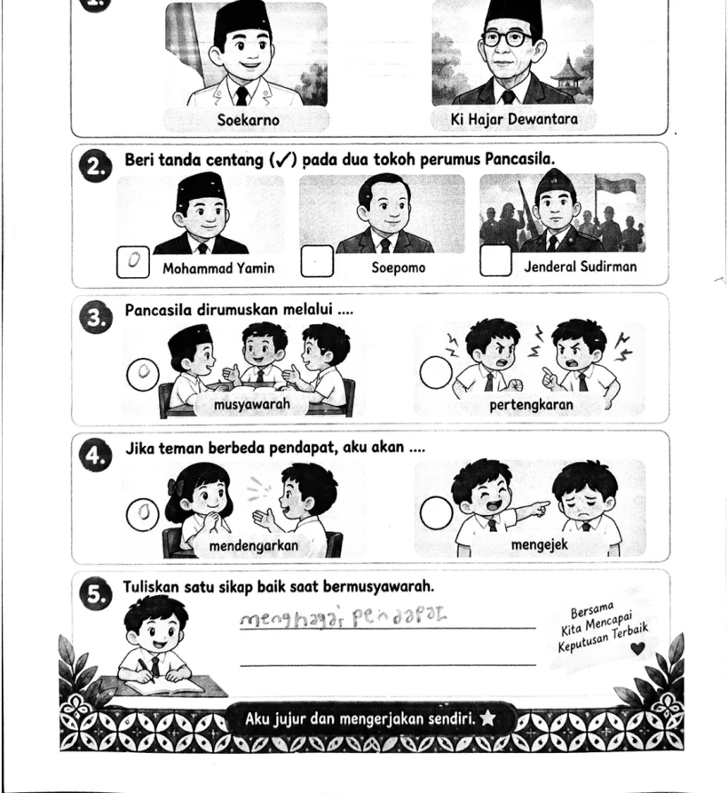
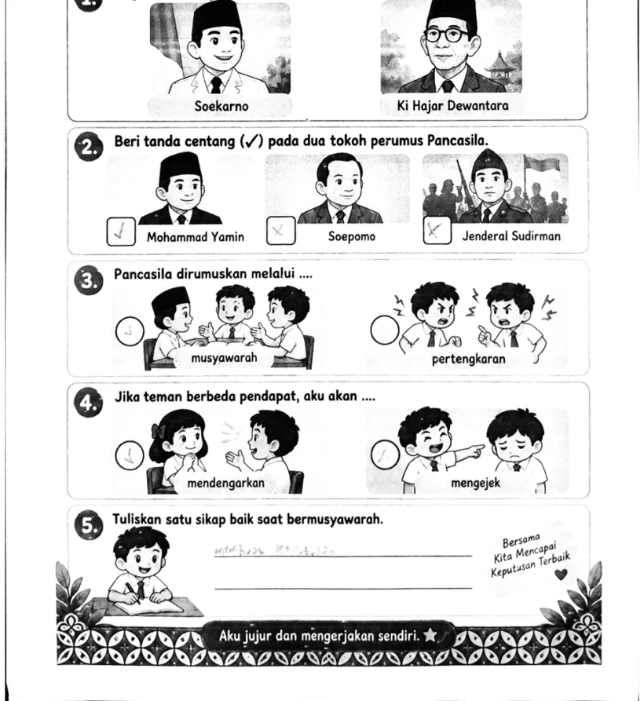
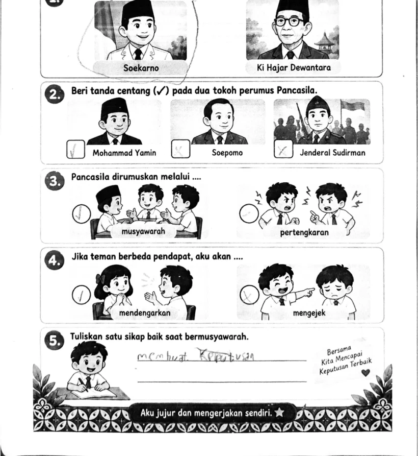

Siklus 2 · Pendidikan Pancasila
Mengenal Perumus Pancasila
Mengenali tokoh bangsa melalui gambar dan kartu, lalu menghubungkan keteladanannya dengan pengalaman bermusyawarah di kelas.
- 90
- Nilai rancangan · LK 7
- 91,25
- Nilai pelaksanaan · LK 8
01Rancangan dan alasan pemilihan
Perangkat ini saya pilih untuk mewakili pembelajaran yang menghubungkan pengetahuan kewargaan dengan perilaku sehari-hari. Tujuannya mencakup mengenali sedikitnya lima tokoh, memasangkan sedikitnya empat gambar dan nama, serta menyebutkan dua sikap teladan. Masalah Papan Tokoh yang kehilangan pasangan nama memberi arah bagi pengamatan, diskusi, dan presentasi. Kekuatan rancangan terletak pada urutan kegiatan yang menghubungkan pengenalan tokoh dengan tindakan mendengarkan dan menghargai pendapat.
Kartu visual dan pembacaan instruksi membantu murid yang masih mengembangkan kemampuan membaca. Namun, bukti untuk tujuan mengenali lima tokoh dan memasangkan empat nama perlu dicatat per murid; lima soal evaluasi tidak dengan sendirinya mencakup semua tuntutan tersebut. Daftar cek individual saat bermain kartu menjadi pelengkap yang perlu dituntaskan.
Sumber: Perangkat ajar siklus 2.
02Materi, media, dan konteks murid
Materi tidak diarahkan pada hafalan rincian sidang, melainkan pengenalan wajah, nama, serta keteladanan bermusyawarah. Gambar tokoh, kartu nama, kartu sikap, dan Papan Tokoh memberi murid objek yang dapat diamati dan dipasangkan. Pengalaman rembug, kerja bakti, hidup rukun, serta unggah-ungguh dihubungkan dengan kegiatan mendengarkan dan bergiliran berbicara. Keterkaitan tersebut membantu nilai Pancasila dibicarakan melalui pengalaman yang dapat dijelaskan murid.
Saya perlu memastikan gambar, ejaan nama, dan sumber pada seluruh kartu konsisten serta mudah dibedakan. Setelah pasangan ditemukan, pertanyaan “Apa yang dapat kita teladani ketika berbeda pendapat?” diperlukan agar aktivitas tidak berhenti pada kecocokan gambar. Murid yang belum memiliki pengalaman rembug dapat memakai contoh musyawarah sederhana di kelas.
Sumber: Perangkat ajar siklus 2.
03Dukungan belajar dan tahapan kegiatan
Modul merencanakan kelompok Bintang, Pelangi, dan Roket berdasarkan asesmen awal, dengan dukungan dua pilihan nama, bank kata, atau pengenalan lebih banyak tokoh. Kelompok bersifat sementara. PBL bergerak dari masalah papan, pengorganisasian peran, penyelidikan kartu, penyajian hasil, hingga pemeriksaan bersama. Peran pengamat, pencari, penyusun, dan penyampai dirancang bergilir agar pekerjaan tidak diambil alih satu anak.
Kesesuaian bantuan harus dilihat dari kemampuan aktual, bukan nama kelompok. Saya perlu mencatat pasangan yang dapat dijawab mandiri, bantuan yang diberikan, serta saat bantuan dapat dikurangi. Penutup sebaiknya meminta satu contoh tindakan santun yang dapat dilakukan murid pada diskusi berikutnya sehingga refleksi menghasilkan keputusan yang jelas.
Sumber: Perangkat ajar siklus 2.
04Pelaksanaan dan penilaian pembimbing
LK 7 memuat skor perolehan 72 dan nilai rancangan 90 pada halaman 3. LK 8 memuat skor 73 dan nilai pelaksanaan 91,25 pada halaman 7. Pada penilaian praktik, apersepsi, dorongan keaktifan, kesesuaian media, pelibatan melalui media, umpan balik, dan pengakomodasian kesulitan mendapat skor 4. Bukti tersebut mendukung kekuatan fasilitasi pembelajaran menurut instrumen pembimbing.
Kolaborasi, penyesuaian materi terhadap kemampuan dan latar belakang, transisi kegiatan, respons terhadap pertanyaan, efisiensi media, bantuan menyimpulkan, serta penilaian sesuai tujuan mendapat skor 3. Saya menafsirkan area tersebut sebagai prioritas pemerataan peran, pertanyaan penuntun yang lebih singkat, dan pengecekan individual sebelum penutup. Uraian ini merupakan interpretasi skor deskriptor; kolom catatan tidak memuat komentar naratif.
Sumber: LK 7–8.
05Bukti hasil belajar dan ketepatan asesmen
Tiga lembar evaluasi yang tersedia memperlihatkan pengenalan tokoh, pemilihan musyawarah, sikap mendengarkan, dan jawaban singkat tentang sikap baik. Pada lembar pertama, tulisan “menghargai pendapat” terbaca pada nomor 5. Tanda pada beberapa pilihan gambar cukup samar; nomor 5 pada lembar kedua juga perlu dikonfirmasi pada dokumen asli. Ketiga kolom nilai akhir masih kosong sehingga belum tersedia dasar untuk menyajikan rerata maupun persentase ketuntasan kelas.
Ada perbedaan antara pedoman pada modul halaman 11 dan lembar evaluasi yang dikerjakan. Pedoman nomor 1–3 menyebut Sukarno, Hatta, dan Yamin, sedangkan lembar menanyakan pemilihan tokoh, dua tokoh, lalu musyawarah. Karena itu, penskoran perlu memakai kunci yang sesuai dengan soal aktual. Bukti tiga lembar juga perlu dilengkapi catatan pengenalan lima tokoh dan empat pasangan nama untuk menilai seluruh tujuan.
Sumber: Tiga lembar evaluasi dan perangkat ajar.
06Refleksi dan tindak lanjut
Pembelajaran ini menguatkan pemahaman saya bahwa media visual dapat membuka akses belajar, tetapi keberhasilan memasangkan kartu perlu diikuti alasan dan perilaku nyata. Prioritas saya adalah menyelaraskan kembali kisi-kisi, soal, kunci, dan tujuan; memeriksa respons yang samar; serta mencatat kemampuan setiap anak secara singkat saat aktivitas berlangsung.
Murid yang belum mengenali tokoh diberi tiga sampai lima kartu dengan dua pilihan nama, lalu diminta mencoba satu pasangan tanpa bantuan. Murid yang sudah siap membuat kartu “Siapakah Aku?” dan menjelaskan satu sikap teladan. Keberhasilan tindak lanjut diperiksa melalui pasangan baru dan contoh tindakan musyawarah yang dijelaskan secara individual.
Sumber: Perangkat ajar siklus 2 dan bukti evaluasi serta penilaian pembimbing. Tindak lanjut merupakan rencana perbaikan.
Video pelaksanaan · Siklus 2
Rekaman praktik yang disertakan untuk Mengenal Perumus Pancasila. Buka pemutar untuk menelusuri hubungan rancangan dengan kegiatan di kelas.
Jika pemutar meminta masuk atau izin, gunakan tautan Drive. Analisis pelaksanaan di atas didasarkan pada deskriptor LK 8; pengamatan langsung rekaman belum diverifikasi.
Lihat tiga contoh pekerjaan murid
Cuplikan menampilkan bagian jawaban. Dokumen lengkap tersedia melalui tombol evaluasi di atas.

Telusuri lembar asli ↗

Telusuri lembar asli ↗

Telusuri lembar asli ↗